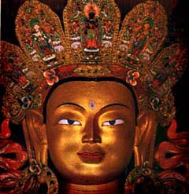

 My intense interest in world religions began when I was in high school, but it really took off in graduate school at TWU. A fellow grad student was a wiccan. I had learned that paganism wasn't synonymous with devil worship (as Catholicism would have one believe), but I didn't know too much about it. Since I was raised Catholic, I knew nothing about the true history of Christianity. This woman taught me quite a different point of view. She whet my curiosity; so I've been searching and researching world religions ever since.
In fact, I have written a script and a book based on my research into historical Christianity. See more about my film productions at Blue Moose Films. You can read both my screenplay Magdalen and my book Rediscovering Christianity from my Home Page.
Disclaimer: I have NOTHING against Christianity. I have received countless emails from "Christians" berating me and disparagingly questioning my site. I am happy to answer questions to those who are curious, but I do not want to be converted. I assure you, you are wasting your time. . .I was raised "Christian," and I have no intention of going back to organized Christianity.
I am fascinated with ancient religions, Celtic ones especially. Unfortunately, the Druids kept no written records; so we know very little about them. We know they worshipped through nature, as all pagan religions do. They honor the earth, as she should be honored. Modern pagans call themselves Wiccan, Druid, Witches, etc. These religions existed thousands of years before Christ was born, and they celebrated their own holidays. See the link to either Wheel of the Year or the Sabbats below. Each of these holidays celebrated or honored the earth in some way. However, these holidays are not known to the majority of our Christian society.
Here are some things to think about: Is it really just coincidence that Christian holidays fall almost exactly over ancient pagan ones?
Easter - Even wonder what bunnies and eggs have to do with the resurrection of Jesus Christ? Answer: NOTHING! Easter is a Christian cover-up of the pagan holiday Ostara (even the names are similar). Ostara is the Norse Goddess of Fertility - her sacred symbols were the rabbit and the egg. Both symbolizing fertility. So, when you sing "Here comes Peter Cottontail" to your children, color eggs, go on easter egg hunts and give them Easter baskets filled with goodies and toy bunnies - you are celebrating the pagan way. Namaste.
Now take Christmas for example. Studies show that Jesus was born during the summer months, so why celebrate his birth on Decembr 25th? To cover up the ancient pagan holiday of Yule. Christmas falls three days after the Winter Solstice, or Yule. During Yuletide, ancient (and modern) pagans celebrate the 'rebirth of the sun' as the days begin to get longer. Christians celebrate the 'birth of the son.' See any correlation? The interesting thing is, we decorate our homes at Christmas time as the pagans did. Did you ever wonder what pine trees, holly, mistletoe, and wreaths had to do with Jesus Christ? NOTHING! They are all remainders of the yuletide tradition! The wreath, for example, signifies the circle of life. Once again, our pagan roots are the ones that shine through. Please follow my links below to find our more about the Winter Solstice.
Check out these links to find out more about Paganism and Holiday Origins.
*The Sabbats or festival days*
Making Love to tantric couples is more than just coital: it's spiritual.
Please find out more about the Tantric Arts:
This is me doing a plough while in full lotus. Yoga is a wonderful wayto relieve stress, muscle tension, and to relax (believe it or not). I've been practicing yoga for about five years now. It has opened up a whole new world for me. I started doing yoga while I was teaching at Arlington Jr Hi. The stress was so overwhelming that I thought I was going to lose my mind. I began doing yoga out of necessity; but I found that it was something I enjoyed. . .something that empowered me and humbled me simultaneously.
This religion has fascinated me for years. I still do not comprehend it. I have read a few books on it; but, just when I think I'm getting it, someone else says I'm completely off. Buddhism seems to have many of the same principles as Christianity (as do the basis of all world religions); however, it is more a way of life that it is a religion. Being a Buddist requires no belief in a "god," but you can believe in a "god or gods/goddesses" etc. I understand the principal precepts of Buddism to be "Know Thyself" and "Harm no living thing." Here are the eight precepts of Buddhism:
I undertake to observe the precepts:
to abstain from harming living beings
to abstain from taking things not freely given
to abstain from sexual misconduct
to abstain from false speech
to abstain from intoxicating drinks and drugs causing heedlessness
I will seek to avoid greed, hatred, and ignorance.
My screen name "KaliTara" comes from two Hindu goddesses. Kali, the destroyer; and, Tara, the green mother.

Christine's Home Page